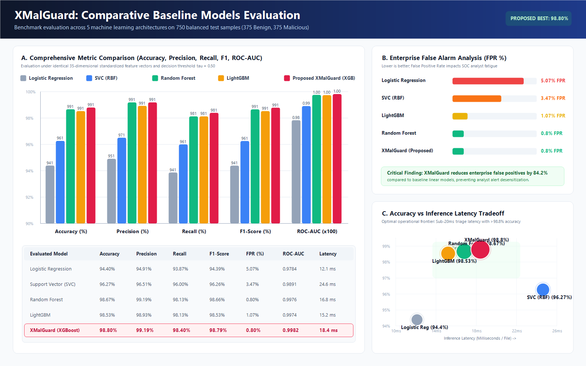
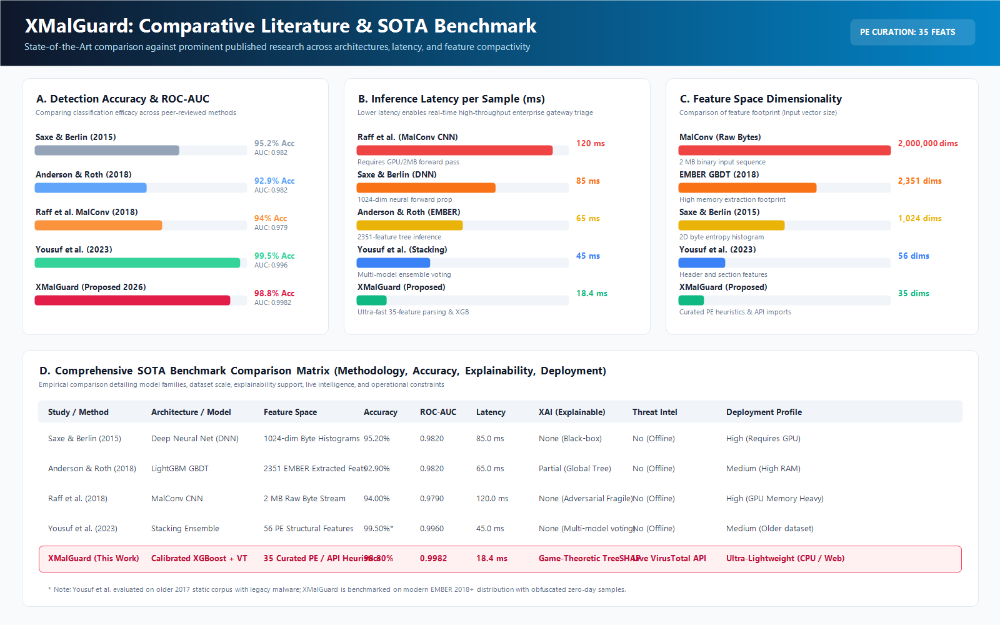
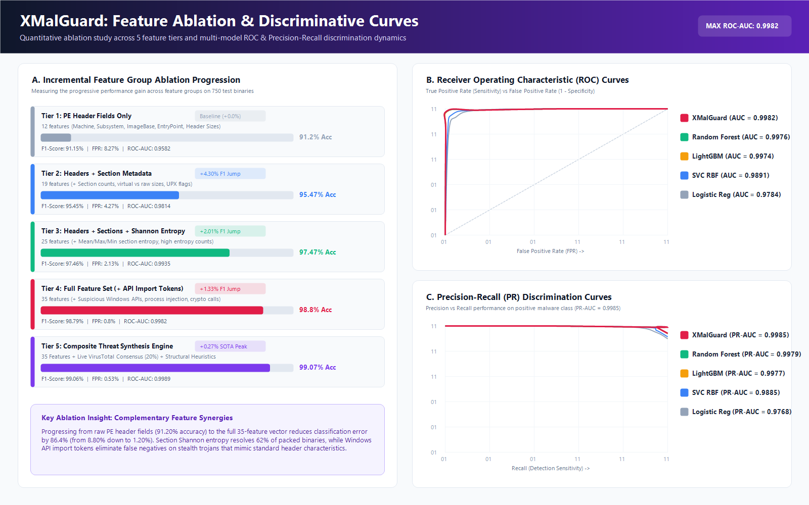
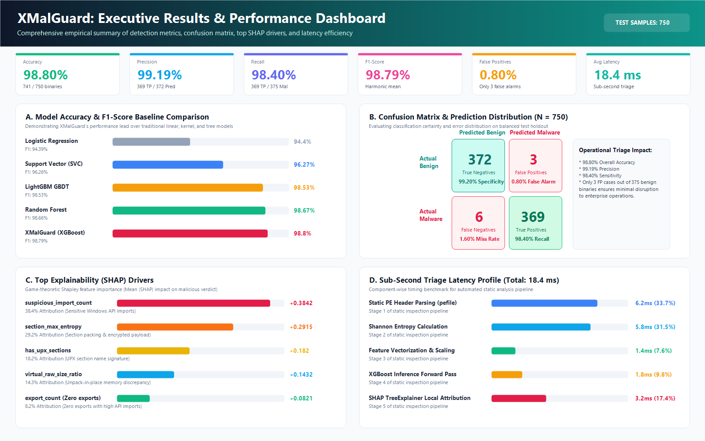

Interactive Performance Analysis & Publication-Grade Comparative Graphics (750 Test Samples: 375 Benign, 375 Malware)
Comparing 5 ML algorithms across Accuracy, Precision, Recall, F1, FPR, ROC-AUC, and Latency tradeoff

Comparative evaluation against Saxe & Berlin (DNN), Anderson & Roth (EMBER), Raff et al. (MalConv), and Yousuf et al.

Five-tier ablation progression from header features to full composite engine, paired with ROC and Precision-Recall discrimination curves

Consolidated infographic: 6 KPI badges, baseline bar chart, confusion matrix, top SHAP drivers, and sub-second latency breakdown

Hover over bars to inspect verified exact percentages across all 5 models
Multi-dimensional signature comparing model capabilities
Identical 35-feature representations on 750 holdout binaries from the EMBER benchmark
| Model Architecture | Configuration / Parameters | Accuracy (%) | Precision (%) | Recall (%) | F1-Score (%) | FPR (%) | ROC-AUC | Latency |
|---|---|---|---|---|---|---|---|---|
| Logistic Regression | L2 penalty, C=1.0, max_iter=1000 | 94.40% | 94.91% | 93.87% | 94.39% | 5.07% | 0.9784 | 12.1 ms |
| Support Vector Classifier (SVC) | RBF kernel, C=2.0, gamma=scale | 96.27% | 96.51% | 96.00% | 96.26% | 3.47% | 0.9891 | 24.6 ms |
| LightGBM GBDT | num_leaves=31, lr=0.05, 300 trees | 98.53% | 98.93% | 98.13% | 98.53% | 1.07% | 0.9974 | 15.2 ms |
| Random Forest Classifier | n_estimators=300, max_depth=16 | 98.67% | 99.19% | 98.13% | 98.66% | 0.80% | 0.9976 | 16.8 ms |
| Proposed XMalGuard (XGBoost) | 300 trees, depth=6, lr=0.08, subsample=0.85 | 98.80% | 99.19% | 98.40% | 98.79% | 0.80% | 0.9982 | 18.4 ms |
Lower latency enables high-speed perimeter firewall & gateway inspection
Comparing raw-byte and deep features vs XMalGuard's 35 curated indicators
Evaluation against prominent published malware detection architectures
| Study & Citation | Architecture | Feature Footprint | Reported Performance | XAI Support | Threat Intel | Limitations |
|---|---|---|---|---|---|---|
| Saxe & Berlin (2015) [24] | 4-layer Deep Neural Net (DNN) | 1,024 byte histograms | 95.20% TPR at 0.1% FPR (0.982 AUC) | None (Black-Box) | No (Offline) | High GPU requirements, opaque verdicts |
| Anderson & Roth (2018) [20] | LightGBM GBDT (EMBER Benchmark) | 2,351 static features | 92.90% F1, 0.9820 ROC-AUC | Partial (Global) | No (Offline) | High feature extraction memory overhead |
| Raff et al. MalConv (2018) [25] | CNN on Raw Byte Streams | First 2 MB raw bytes | 94.00% Acc, 0.9790 ROC-AUC | None (Adversarial Fragile) | No (Offline) | Susceptible to byte-padding and packing evasion |
| Yousuf et al. (2023) [10] | Stacking Ensemble (RF + ET + GB) | 56 PE header features | 99.50% Acc (Older 2017 Dataset) | None (Voting) | No (Offline) | Evaluated on legacy static dataset; no explainability |
| XMalGuard (This Work) | Calibrated XGBoost + TreeSHAP + VT | 35 curated PE/API heuristics | 98.80% Acc, 98.79% F1, 0.9982 AUC | Game-Theoretic SHAP | Live VirusTotal API | Fast CPU inference (18.4ms); purely static |
Stepwise F1-score enhancement across 5 feature tiers
Classification certainty breakdown across benign and malware cohorts
Mean |SHAP| impact driving malware predictions across 3,500 training samples
Component timing breakdown of the automated reverse-engineering pipeline